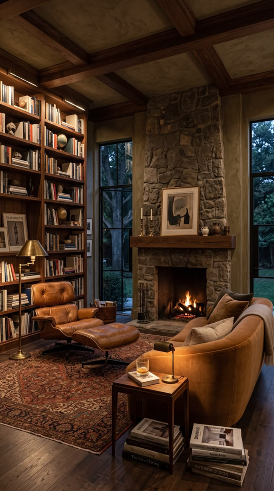

Позиционирование клиники
Спокойная библиотека вместо больничного кабинета
Больничная обстановка сама по себе вызывает у человека напряжение. Поэтому приём в Inferno Therapy проходит в тихом зале с высокими книжными стеллажами, мягкими кожаными креслами и живым огнём.
Тёплый свет настольных ламп и тишина помогают без страха назвать свою тревогу вслух, перенести её пером на бумагу и отпустить в огонь.
